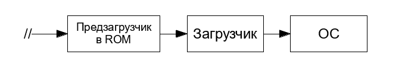

Заметки об ОС Linux. Часть 2. Процесс загрузки
Большая часть сведений здесь взята из статьи Загрузка ОС на ARM на Хабре.
Здесь будут даны сведения о загрузке Linux на ARM. Особенности загрузки других ОС затронуты не будут, поскольку это не тема данного руководства.
Загрузчик ОС
Загрузчик обеспечивает запуск ОС и ряд сервисных функций, например проверку целостности образа ОС перед запуском, обновление ПО, самотестирование и т.д. Очень часто в качестве загрузчика можно встретить U-Boot или иные решения с открытым исходным кодом. Для x86_64 «собратьев» обычно применяются GRUB и systemd-boot.
Таким образом, если очень сильно упростить, то процесс загрузки ОС выглядит следующим образом:

Здесь знаком // отмечен момент подачи питания или сброса процессора. Такой простой способ запуска был у некоторых процессоров ARMv7. В более новых версиях процессоров процесс куда сложнее, чем на приведённой схеме.
Схема «Загрузчик» -> «ОС» очень удобна из практических соображений, ведь загрузчик берёт на себя всю низкоуровневую работу:
- Инициализирует память перед запуском ОС и загружает ядро ОС в память
- Инициализирует часть периферии
- Иногда реализует хранение двух образов ОС: текущего и резервного или образа для восстановления
Например, для запуска Linux на ARM загрузчик должен инициализировать память, хотя бы один терминал, загрузить образ ядра и Devicetree в память и передать управление ядру. Всё это описано в документации Linux. Код инициализации ядра Linux не будет делать сам то, что должен делать загрузчик.
Рассмотрим работу загрузчика на примере U-Boot:
- После включения или сброса процессор загружает образ U-Boot в ОЗУ и передаёт управление на первую команду этого образа.
- U-Boot инициализирует DDRAM.
- U-Boot инициализирует драйверы загрузочного носителя (ЗН), например eMMC, NAND Flash и т.д.
- U-Boot читает с ЗН область переменных конфигураций. В конфигурации задан скрипт загрузки, который U-Boot далее исполняет.
- U-Boot выводит предложение прервать процесс загрузки и сконфигурировать устройство. Если за 2-3 секунды пользователь этого не сделает, запустится загрузочный скрипт.
- Иногда скрипт начинается с поиска подходящего образа ОС для загрузки на всех доступных носителях. В других случаях ЗН задаётся в скрипте жёстко.
- Скрипт загружает с ЗН в DDRAM образ ядра (
zImage) и файл Devicetree с параметрами ядра. - Дополнительно скрипт может загрузить в память образ
initrd. zImageсостоит из распаковщика и сжатого образа ядра. Распаковщик развёртывает ядро в памяти.- Начинается загрузка ОС.
Предзагрузчик
Однко в реальности почти никогда не бывает, чтобы команды загрузчика выполнялись первыми после включения или сброса процессора, тем более на современных ARM-процессорах.
Любое ядро ARM-процессора при сбросе начинает исполнение с адреса 0, где записан вектор reset. Старые процессоры буквально начинали загружаться с внешней памяти, отображённой по нулевому адресу, и тогда первая команда процессора была первой командой загрузчика. Однако для такой загрузки подходит только параллельная NOR Flash или ROM. Эти типы памяти работают очень просто: при подаче адреса они выдают данные. Характерный пример параллельной NOR Flash — микросхема BIOS в x86/x86_64 компьютерах.
В современных системах используются другие виды памяти, потому что они дешевле, а их объём больше. Это, например, NAND, eMMC, SPI/QSPI Flash. Эти типы памяти уже не работают по типу «подал адрес — читаешь данные», а значит, что для прямого исполнения команд из них не подходят. Даже для простого чтения нужно написать специальный драйвер, поэтому мы имеем проблему «курицы и яйца»: драйвер нужно откуда-то заранее загрузить.
По этой причине в современные ARM-процессоры интегрировано ПЗУ с предзагрузчиком. ПЗУ отображено в процессоре на адрес 0, и именно с этого адреса начинается исполнение команд процессором.
Задачи предзагрузчика:
- Определение конфигурации подключенных устройств;
- Определение загрузочного носителя (ЗН);
- Инициализация устройств и ЗН;
- Чтение загрузчика с ЗН;
- Передача управления загрузчику.
Конфигурация предзагрузчика обычно устанавливается одним из двух способов:
- Схемотехнически — подключением определённых выводов процессора к земле или шине питания;
- Записывается в однократно программируемую память процессора на этапе производства.
В целом почти всегда есть возможность задать единственный вариант загрузки или основной и несколько альтернативных.
Подобный предзагрузчик устанавливается как в процессорах типа Cortex-A, так и в микроконтроллерах, даже таких маленьких, как Cortex-M0. Вместе с предзагрузчиком процедура запуска ОС выглядит так:

Код предзагрузчика пишется производителем конкретного SoC, а не компанией ARM, является частью SoC как продукта компании-производителя и защищён авторским правом.
Использования предзагрузчика в большинстве сценариев избежать нельзя.
Спойлер
У ARMv8-A есть специальная микропрограмма под названием ARM Trusted Firmware (TF-A). Это системное ПО, отвечающее, например, за управление питанием (PSCI). Этот код можно считать, в какой-то степени, BIOS для ARMv8. У более ранних процессоров (например, ARMv7) такого ПО нет.
TrustZone
В процессоры ARM Cortex-A и Cortex-R встраивается технология TrustZone. Эта технология позволяет на аппаратном уровне выделить два режима исполнения: Secure (Безопасный) и Non-Secure (Гостевой).
Эти процессоры в основном нацелены на рынок смартфонов и планшетных ПК, где TrustZone используется для создания в режиме Secure доверенной «песочницы» для исполнения кода, связанного с криптографией, DRM, хранением пользовательских данных.
В режиме Secure при этом запускается специальная ОС, называемая в общем случае TEE (Trusted Execution Environment, Доверенная Среда Исполнения), а «нормальная» ОС, такая как Linux, iOS и т.д., запускается в режиме Non-Secure. При этом права доступа к некоторым устройствам ограничены для «нормальной» ОС, поэтому её ещё называют гостевой ОС.
Из-за наложенных ограничений гостевая ОС вынуждена время от времени вызывать функции TEE для исполнения некоторых операций. TEE продолжает существовать параллельно с гостевой ОС, и гостевая ОС не может с этим ничего поделать.
Например, гостевая ОС использует функции TEE для:
- Включения и выключения ядер процессора (в ARMv8-A это происходит через PSCI — часть TF-A);
- Хранения ключей, банковских карт и т.п.
- Хранения ключей полнодискового шифрования;
- Операций с криптографией;
- Отображения DRM-контента.
Процесс загрузки ОС на ARM (Cortex-A) примерно выглядит так:

На схеме пунктиром обозначен путь обращения из ядра ОС в TEE.